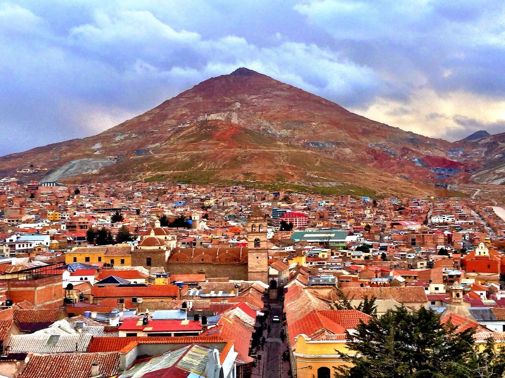

Potosí es mundialmente conocida por el legendario Cerro Rico y su inmensa riqueza de plata durante la época colonial.
Para aprender más sobre la historia y atractivo de la ciudad, INGRESE AL LINK:
Explorar información de Potosí